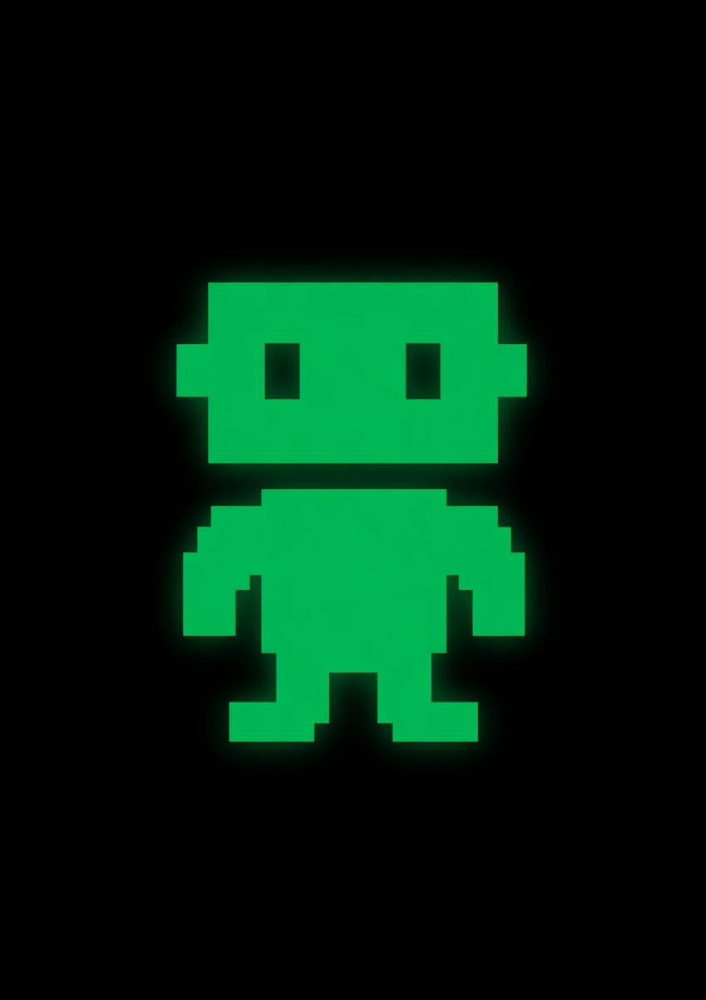

Welcome to Alaude
Sign in to start chatting with any AI model
●
Sign in with Anthropic
●
Sign in with OpenAI
●
Sign in with Google
or enter an API key
Anthropic (Claude)
OpenAI (GPT)
Google (Gemini)
xAI (Grok)
Kimi (Moonshot)
Qwen (Alibaba)
GLM (Zhipu)
Connect
Enter API key manually
›
📝 Document · exit
🔍
0/0
↑
↓
×
Alaude
⚙️
General
▾
+ New session
Recent
▾
Files
↻
GPT-4o
v–
🎭
Council
🌙
🧠 Memory
🌳 Map
📊 Insights
🦙 Local Models
API Keys
⎋ Exit focus
What can I help you with?
Drop files here, or try one of these:
📎
Drop file here
↓
💬
0
·
📎
0
·
🧮
0
tokens
▾
Choose folder
← pick a folder so this model can save files and run commands
Listening… release Space to send
Esc cancels
🧠 Memory Lens
×
Alaude remembers key facts about you across all sessions. Relevant memories are silently attached to each prompt so responses feel less amnesic.
↺ Clear all
+ Add memory
✨ Prompt Snippets
×
Type
/
at the start of your message to pick one. Use
{{variable}}
placeholders — Tab cycles through them.
Cancel
Save
↺ Restore defaults
+ New snippet
API Keys
×
Save Keys
Local Models
×
🦙
Ollama isn't running
Alaude runs local models through Ollama — free, open-source, and private. Install it, then come back.
Download Ollama
I've installed it — recheck
...
0%
Starting…
Cancel
Installed
No models installed yet — pick one below to get started.
Available to download
Pull custom tag
Download
Any tag from
ollama.com/library
works.
Keyboard shortcuts
Press
Esc
to close
Navigation
Command palette
⌘
P
Focus input
⌘
K
New session
⌘
N
Global search (every session)
⌘
F
Find in current session
⌘
L
Thinking Graph (session DAG)
⌘
⇧
M
Menu-bar Quick (from anywhere)
⌘
⇧
A
Close any overlay
Esc
Chat
Send message
↵
New line in message
⇧
↵
Recall previous prompts
↑
/
↓
in empty input
Next
{{variable}}
in snippet
Tab
Trigger snippet menu
/
at start of input
Push-to-talk (input empty)
hold
Space
Cancel voice
Esc
Toggle Council mode
⌘
⇧
C
Session
Export current as Markdown
⌘
E
Export full backup (JSON)
⌘
⇧
E
Export as HTML (share-ready)
command palette → "Export session as HTML"
📝 Summarize this session
⌘
⇧
S
✓ Extract action items (TODOs)
⌘
⇧
T
🎯 Set / edit session goal
⌘
⇧
G
Switch to pinned model slot
⌘
1
…
6
(outside inputs)
Toggle Focus Mode
F
(outside inputs)
Rewind / Branch
buttons on any assistant reply
Pin a message
📌 button on any reply
Undo session delete
click
undo
in toast (4s)
Code blocks
Copy code
📋 button (on hover)
Insert code into input
↘ Insert button
Ask a follow-up about code
💬 Ask button
Files & images
Attach a file
📎 button or drop
Paste an image
⌘
V
in input
Attach workspace file
click in sidebar Files tree
Appearance
Toggle theme (light/dark)
⌘
⇧
L
Toggle sidebar
⌘
\\
📝 Living Document reader
⌘
⇧
D
Show these shortcuts
?
or
⌘
/
🌳 Thinking Graph
Close (esc)
UX Insights
×
⚖ Compare messages
×
🎉 What's in Alaude
×
Every feature shipped in the v0.2 line. Click
Try it
to jump straight in.
✓ Task Board
×
Open
Done
All
📊 Activity Heatmap
×
One cell per day for the last year. Darker = more assistant replies.
📅 Daily Digest
×
Today
Last 7 days
Last 30 days
📥 Export as Markdown
📒 Feedback Journal
×
Every 👍 and 👎 you've tapped on an assistant reply, across every session. Click any row to jump back to the message.
📥 Export JSONL
📈 Model Performance
×
Aggregated across every session you've ever had. Stats are from the streaming telemetry — no network round-trip.
📥 Export CSV
Create Custom Space
×
Icon (emoji)
Name
Description
AI Persona / Instructions
Input placeholder
Create Space